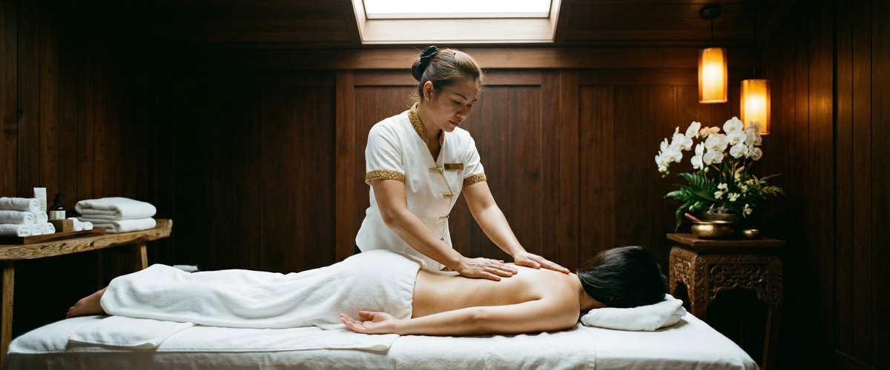
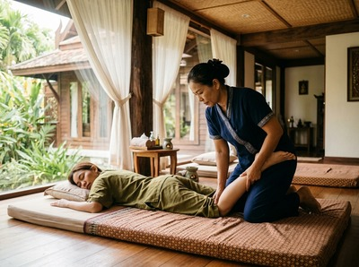
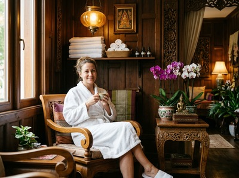

If your body carries the weight of long working days, persistent muscle tension, or restricted movement you can't seem to shake, traditional Thai massage in Glasgow may be exactly what you've been missing.

At Serendipity Massage Therapy & Wellness on Hope Street, this ancient treatment is delivered by a trained team who know how to get real results from it.
Traditional Thai massage has over 2,500 years of practice behind it. It combines acupressure, assisted stretching, and firm pressure along the body's sen energy lines to release tension and restore balance. Unlike oil-based massage, this treatment is done fully clothed, on a padded floor mat. Your therapist uses their hands, thumbs, elbows, forearms, and knees to work through the whole body in sequence.
It draws from principles shared with yoga and reflexology, making it a true whole-body treatment — one that addresses how your body actually functions, not just how it feels in the moment.

Sessions are active and hands-on. Your therapist guides your body through supported stretches and compressions that unlock stiffness, decompress the joints, and leave you feeling grounded and energised. Pressure can be adjusted to suit you — from gentle and calm to firm and deeply therapeutic.
This treatment suits anyone whose body has become stiff, tight, or worn down by daily life. It works well for office workers carrying desk tension in their shoulders and hips, and for active people who want to support recovery and protect against injury. One of our regulars — a healthcare worker who spends long shifts on her feet — tells us Thai massage is the one treatment that reliably resets her body before the next week begins. If standard relaxation massage isn't reaching the deeper tension you're holding, Thai massage often will.
It's also a strong choice for first-time clients. Staying fully clothed tends to feel more comfortable than oil-based treatments, which removes a common barrier for people trying massage for the first time.
Ready to do something about that tension? Book your session today and let our team put together the right treatment for you.

Sessions run for 60 or 90 minutes. You'll be given loose, comfortable clothing to change into before you start. Your therapist will take a few minutes to find out what you're bringing to the session — a specific area of tension, a recent strain, or built-up stress.
You'll then lie on a floor mat while your therapist works through a full sequence of rhythmic compressions and assisted stretches, moving from the feet upward and adjusting pressure throughout. Most clients leave feeling deeply relaxed and noticeably lighter. Drink water after your session and give yourself a little time before jumping back into your day.
At Serendipity, every therapist is trained to the same standard using techniques developed by head therapist Jariya Malone. Your experience doesn't depend on who you're booked with. Whether it's your first visit or your fiftieth, you'll receive the same skilled, attentive treatment every time.
No. Traditional Thai massage is performed fully clothed throughout. You'll be given loose, comfortable clothing at the start of your session — there's nothing you need to bring or prepare. This makes it a great choice for clients trying massage for the first time.
Sessions at Serendipity are available in 60 and 90-minute durations. For a first session or a focused treatment, 60 minutes works well. If you want a more complete full-body treatment, or have several areas to address, 90 minutes allows for a fuller sequence.
Most clients leave feeling relaxed and physically lighter, with better movement in areas that felt restricted before. Some people notice mild muscle soreness the next day — similar to how you feel after a good stretch session. This usually eases within 24 hours, leaving a lasting sense of ease and improved movement.
For general wellbeing and stress management, every two to four weeks works well for most people. If you're dealing with chronic tension, postural issues, or a specific area of discomfort, your therapist may suggest more frequent sessions at first before moving to a maintenance schedule.
In many cases, yes — but it depends on the nature and stage of your injury. Let us know about any existing conditions when you book and again when you arrive. Our therapists will adapt the session to work safely around any limits, and will always put your comfort first. If you have a recent acute injury or have been told to avoid physical therapy, please check with your GP first.
Traditional Thai massage is done fully clothed using acupressure and assisted stretching. The focus is on energy lines and joint mobility. Thai oil massage uses oils applied directly to the skin, with flowing strokes and targeted pressure that tend to feel more deeply relaxing. Both are excellent treatments. The right choice depends on whether you want active bodywork and improved mobility, or a more soothing, restorative session.
Still not sure which treatment is right for you? Get in touch to book your appointment and we'll help you find the best fit.